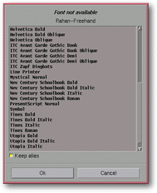

<!-- Documentation XQuad (c)1995-2000 AXENE contact axene@axene.org>
<html>

<head>
<title>Dialog Box: Font Replacement</title>
</head>

<body BGCOLOR="#FFFFFF" BACKGROUND="Images/back.gif" TEXT="#000000">

<p ALIGN="right">  </p>

<p><br>
<br>
The <i>Font Replacement</i> dialog box can appear when <a
HREF="Menu_File.html#open_menu_entry">loading a XQuad document</a>. The downloading file
may contain specific fonts. If one of these fonts does not have an XQuad equivalent, this
box will open automatically to establish an equivalent.<br>
<br>
</p>

<hr>

<p align="center"><br>
 <br>
<small><i>Screen snap: Font Replacement dialog box</i></small></p>

<p><br>
</p>

<hr>

<p><br>
</p>

<h3>Upper Portion of the Dialog Box:</h3>

<ul>
  <li><a NAME="label">Unavailable font label. This label gives the name of the font to be
    replaced, as indicated in the file being read and for which there is no XQuad equivalent
    font.</a><br>
    &nbsp;</li>
  <li><a NAME="font_list">The XQuad <i>Available Font List</i>. The user must select an item
    from the list; this font will become the substitute for the previous font with no XQuad
    equivalent. By default, the XQuad font with a name most similar to the unavailable font
    will be selected.</a><br>
    &nbsp;</li>
  <li><a NAME="keep_button">The <i>Keep Association</i> button allows the user to store the
    substitution of one font by a particular XQuad font for the remainder of the execution. To
    this end each time the unavailable font is encountered, the XQuad font will be substituted
    automatically.</a></li>
</ul>

<p><br>
</p>

<h3>Lower portion of the dialog box:</h3>

<ul>
  <li><a NAME="button_ok"><i>OK</i> accepts the replacement font for the unavailable font and
    continues to download the file.</a><br>
    &nbsp;</li>
  <li><a NAME="button_cancel"><i>Cancel</i> cancels the font substitution and stops
    downloading the file.</a></li>
</ul>

<p><br>
</p>

<hr>

<p ALIGN="right"></p>
</body>
</html>
